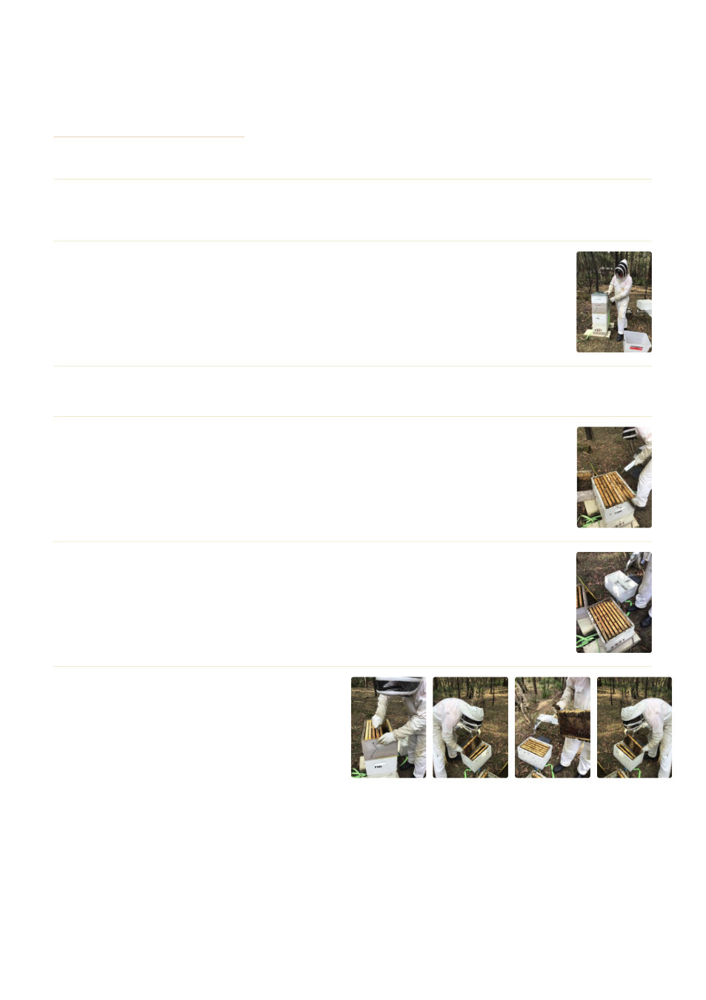

GENERAL BEEKEEPING
Winter pack down guide
Winter welfare for your bees video
The time to perform a winter pack down is around April 25th
1
Have all equipment you require including extra boxes including storage boxes. It is important to
have a plan of how and what you are preparing to do.
2
Set up your gear around the hive so once you start you are not trying to look for
anything. It is a good idea to have three areas to put the frames you remove from
the hive: one for brood frames, one for honey frames and the other for empty
frames.
3
Smoke the bees. Wait a minute for it to take effect.
4
Remove the lid. It is a good idea to turn the lid upside down and put a spare super
on it. This is where you put your brood frames. The reason for this: if you accident‐
ally have the queen on one of your frames and she drops off, she will land in the
lid and not on the ground.
5
Look into the top of the box and count the frames of bees. The frame should be
fully covered on both sides with bees to be a 'full frame'. Otherwise, gauge from
two or more frames with partial bee numbers to 'estimate' the number of full
frames you have. This will depend on how far you can pack the bees down.
6
Start removing the frames as you would
if you were checking the hive, except
separate the frames ‐ brood in one box,
honey frames in another box and the
empty frames in another box. Keep try‐
ing to find the queen on each frame until
located.
Geelong Beekeepers Club ∙ General Beekeeping
42